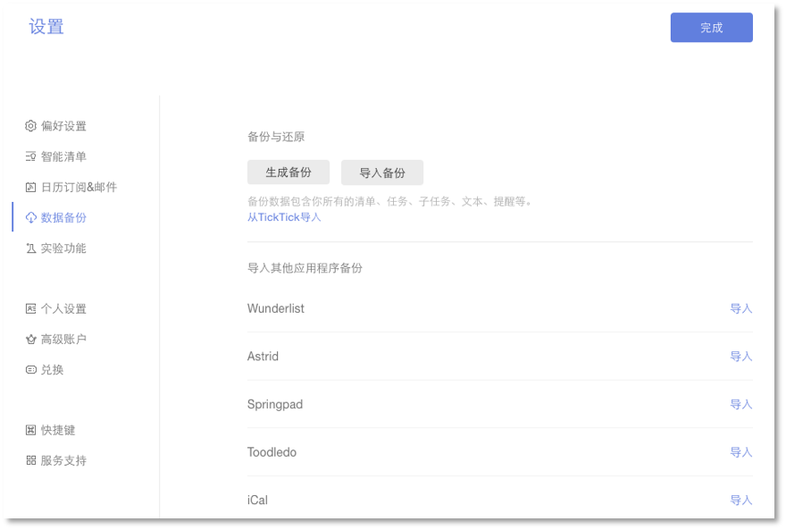

数据
生成和导入备份
点击左上角头像-【设置】-【数据备份】。然后,点击【生成备份】按钮, 这样您就可以备份一个以 csv 为后缀的文件。
如你需要导入备份,您可以单击【导入备份】，再上传以 csv 为后缀的文件。
注：若一天内备份次数过多，会提示“你今天已经备份过多次，请明天再试。”

从其他应用中导入任务
若您希望将其他应用的任务移入滴答清单，可以点击左上角头像-【设置】-【数据备份】。
然后选择对应的应用（ Wunderlist , Astrid , Toodledo 等等 ）上传备份文件到滴答清单。 
账户迁移
如果你是 TickTick 用户，现在使用滴答清单，可以进行数据迁移。
数据迁移需要登陆网页版滴答清单。
迁移方式有两种：
- 自助迁移：打开数据迁移页面, 输入 TickTick 用户名和密码，点击导入即可。
- 人工迁移：当自助迁移出现问题时，用您的注册邮箱发送邮件到support@dida365.com 提交申请，我们将会在一个工作日之内受理您的数据迁移请求。
注：密码中含有特殊字符会导致迁移失败，所以如果密码带特殊字符，请更改密码后再进行迁移，迁移成功后可自行更改密码。
高级账户如何迁移？
滴答清单支持将 TickTick 高级账户迁移到滴答清单，若您是 TickTick 的高级账户，且高级账户未到期，则迁移到滴答清单后，依然享有高级账户权限。
- 支付宝付款的TickTick高级账户，直接进行数据迁移即可，高级账户会迁移到滴答清单。
- 如您非支付宝付款，请用您的注册邮箱将 TickTick 账户信息、滴答账户信息以及支付信息发送到我们的邮箱 supprot@dida365.com ，我们将为您进行人工迁移。